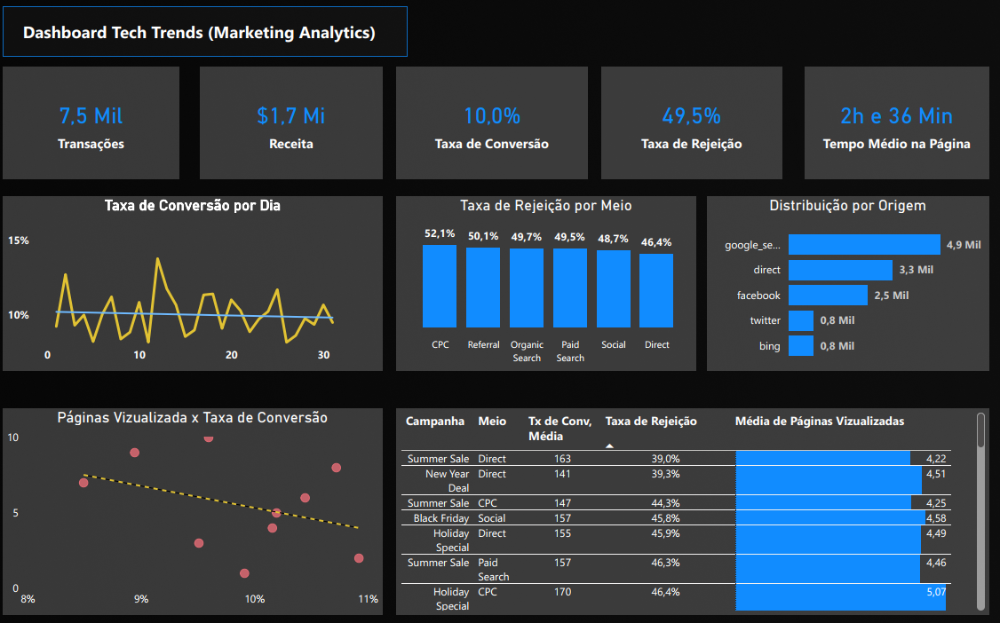
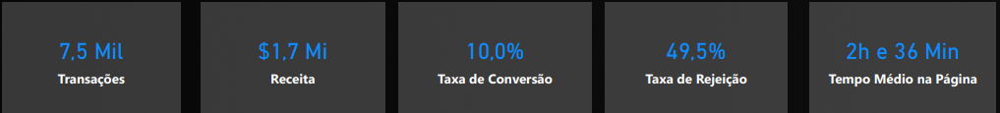
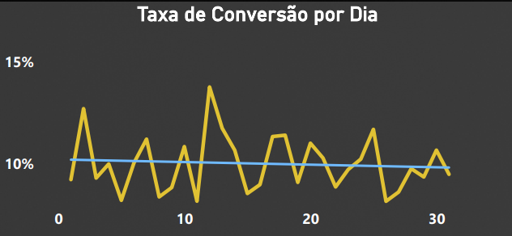
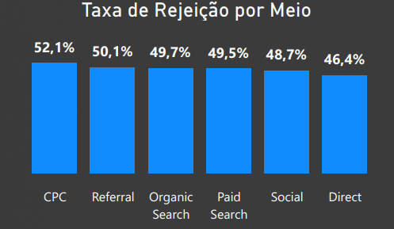
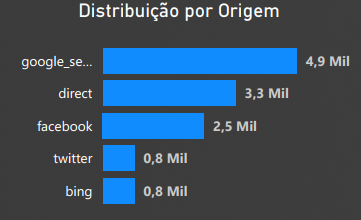
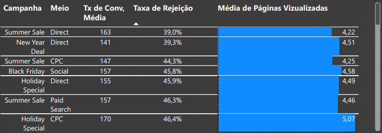

Project: Tech Trends Dashboard - Digital Marketing Analysis
Introduction
This project presents a Marketing Analytics Dashboard, built to provide a comprehensive view of digital campaign performance and user behavior. The main objective is to empower marketing teams to monitor key metrics such as transactions, revenue, conversion and bounce rates, and average time on page, allowing for in-depth analysis by channel and campaign. The dashboard aims to optimize resource allocation, identify higher-performing channels, and refine strategies to maximize return on investment in digital marketing.
Project Structure
The main requirements and indicators developed for this analysis were:
- Performance Overview: Display of total Transactions, Revenue, General Conversion Rate, General Bounce Rate, and Average Time on Page.
- Daily Conversion Rate Trend: Line chart to visualize the daily variation of the conversion rate, identifying peaks and valleys.
- Traffic Channel Performance: Analysis of Bounce Rate by Medium (CPC, Referral, Organic Search, Social, Direct, Paid Search) to evaluate traffic quality.
- Traffic Distribution by Source: Quantification of traffic from different platforms and sources (Google, Facebook, Twitter, Direct, Bing).
- Campaign Performance Analysis: Detailed table showing Average Conversion Rate, Bounce Rate, and Average Pages Viewed per Campaign and Medium, allowing for a granular assessment of effectiveness.
Technologies Used
For the construction of this analytical dashboard, the tools employed were:
- Power BI Desktop: To connect data sources, perform the necessary modeling and transformation, and develop the interactive visuals that compose the dashboard.
- Figma: Dashboard prototyping and design were done with Figma, ensuring an intuitive and visually appealing user experience.
ETL Process (Extract, Transform, and Load)
The ETL process for the Tech Trends Dashboard was:
- Extraction: Data was extracted from a database containing digital marketing information, likely from web traffic analysis platforms. The data was provided in a
.csvfile, containing performance metrics by day, channel, campaign, and source. - Transformation: In Power Query, an integral part of Power BI, various cleaning and enrichment operations were performed. This included:
- Handling missing or inconsistent values.
- Standardizing channel and campaign names.
- Loading: After the extraction and transformation steps, the data was loaded into the Power BI data model, ready to feed all the charts and tables of the dashboard, allowing for interactive exploration.
Dashboard
The dashboard features a clean and functional design, with key indicators highlighted for immediate understanding of overall performance. The visuals are logically organized, including line charts for trends, bar charts for comparisons between channels and sources, and detailed tables for campaign performance. Interactivity is a strong point, allowing users to explore the data in depth, filtering by different dimensions and obtaining specific insights for their marketing needs.

Insights
The analysis of the data presented in the dashboard revealed valuable insights into the performance of digital marketing strategies:
- Marketing Performance Overview:
- The dashboard highlights essential indicators: 7.5 thousand transactions, generating $1.7 million in revenue.
- The overall conversion rate is 10.0%, while the bounce rate is 49.5%.
- One striking point is the average time on page of 2 hours and 36 minutes. While an indicator of engagement, such a high time may suggest very dense content or the need to optimize the user journey for faster conversion, depending on the type of business.

- Daily Conversion Rate Trend:
- The “Conversion Rate by Day” line chart shows the daily fluctuation of the conversion rate. With explicit date labels, the visualization allows identifying the days of highest and lowest performance, aiding in planning actions for specific days.

- Traffic Medium Bounce Rate:
- The Bounce Rate by Medium is a critical indicator of traffic quality. “Direct” traffic (Direct Message) shows the lowest bounce rate, at 46.4%, indicating that this channel attracts more qualified visitors.
- In contrast, the “CPC” (Cost per Click) channel has the highest bounce rate, reaching 52.1%. This suggests that, although it can generate traffic, some of this traffic may not be as relevant or engaged.

- Traffic Distribution by Source:
- The main traffic sources are Google Search (4.9 thousand) and Direct (3.3 thousand).
- Facebook (2.5 thousand) also contributes significantly, while “Bing” (0.8 thousand) and “Twitter” (0.8 thousand) traffic are smaller. This insight is fundamental to understand where users come from and to optimize investment across different platforms.

- Detailed Campaign Performance:
- The “Average Conversion Rate, Bounce Rate, Average Pages Viewed” table by Campaign and Medium offers valuable insights:
- The “Summer Sale” campaign via “Direct” traffic shows the lowest Bounce Rate (39%) and an average of 4.22 pages viewed.
- The “New Year Deal” campaign via “Direct” stands out for the second lowest Bounce Rate (39.3%), which, combined with an average of 4.51 pages viewed, indicates very high-quality and engaged traffic.
- The campaigns (Summer Sale) via CPC and Black Friday via Social also show strong results in conversion and pages viewed, suggesting that the CPC channel, despite the high overall bounce rate, can be very effective when directed to specific campaigns.
- The “Black Friday” campaign via “Direct” has the highest bounce rate among those listed (56.5%), but is still a considerable result.
- The “Average Conversion Rate, Bounce Rate, Average Pages Viewed” table by Campaign and Medium offers valuable insights:

Considerations
The dashboard offers actionable insights to optimize digital marketing strategies. Based on the data presented, some important considerations emerge:
- Traffic Channel Optimization: The company should investigate the cause of the high bounce rate of the CPC channel. If the rate is too high for the general CPC, it may be necessary to adjust target audience segmentation or ad relevance to attract more engaged users. In contrast, “Direct” should be prioritized, given its lower bounce rate, indicating higher traffic quality.
- Capitalizing on Successful Campaigns: The “Summer Sale” campaigns (both Direct and CPC) are examples of success. It is crucial to analyze the factors that made them so effective (offer, creatives, targeting) and replicate these learnings in future campaigns.
- Time on Page Analysis: The average time of 2h 36min is an atypical data point for most marketing websites. It is essential to understand if this high value is intentional (e.g., long video content, courses) or if there is a tracking malfunction. If intentional, the focus should be on how to monetize this engagement. If not, investigate and correct usability or loading issues.
- Media Investment Allocation: The dominance of Google, Direct, and Twitter as traffic sources validates investment in these platforms. The company can consider exploring the potential of these channels even further, while evaluating the feasibility of expanding or optimizing performance in smaller sources like Bing.
Conclusion
The dashboard is a powerful analytical tool that transforms raw marketing data into actionable intelligence. Its main contribution lies in its ability to:
- Provide a clear view of the overall performance of digital campaigns and user behavior.
- Identify the quality of traffic from different channels and the effectiveness of specific campaigns.
- Offer insights into the main traffic sources, aiding in strategic resource allocation.
This project demonstrates the ability to create Business Intelligence solutions that empower marketing teams to make data-driven decisions, optimize campaign performance, and, ultimately, drive transactions and revenue in a competitive digital environment.